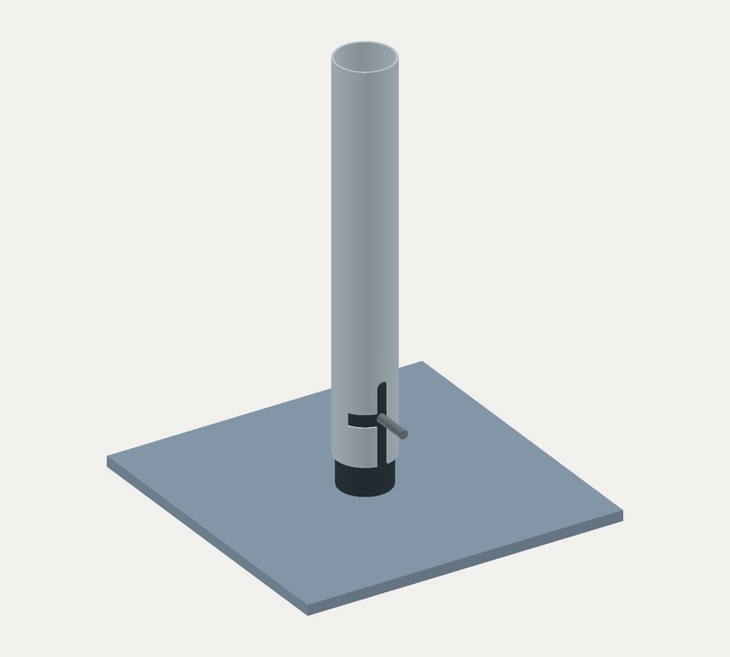

Gartenfackel / D-V03
Sockel D
Vollmaterial. Direktes Gewinde. Fünf Bauteile.
150 × 150 mm Grundfläche ·
5, 8 oder 9 mm Platte
Konzeptmaße · noch nicht freigegeben

1 / 8 · Teile vorbereiten
Schrittweise Montage mit Pause. Die Steck-Dreh-Bewegung wurde am nominalen Modell abgetastet; eine Rückdrehsicherung ist nicht vorhanden.
Alle Schritte auswählen
Druckbare Montage- und Prüfanleitung ↗ · Bewegungsprüfbericht
PAPIER & WERKSTATT
Prüfzeichnungen

Zeichnungssatz für 5 mm Platte, Revision D-V03. PDF und Blätter folgen der Plattenwahl. A3 bei 100 % drucken; keine freigegebenen Fertigungszeichnungen.
HERKUNFT & NACHVOLLZIEHBARKEIT
Maße & Dateien
| Merkmal | Entwurf | Herkunft / Grenze |
|---|---|---|
| Platte | 150 × 150 mm · 5 / 8 / 9 mm | Vage Nutzerschätzung; kein Lastnachweis |
| Originalreferenz: Kopf / Querstift | Ø24 × 30 / Ø4, Überstand 17 mm | Unbestätigter Fotoentwurf D02 |
| Massive Aufnahme | Ø24 × 50 mm; axiales M8-Sackloch | Vollmaterial vom Nutzer festgelegt; Maße und Werkstoff unbestätigt |
| Sackloch / Querstift | Gewinde-Zieltiefe 18; zylindrische Bohrtiefe 20 + Spitze 2,4 mm; Stiftsitz 4 mm | Konzeptwerte; Kernloch, Gewindeauslauf, Passung und Sicherung noch festzulegen |
| Schraube | M8 × 20 als Hüllmodell, 90°-Kopf Ø16 | Keine normmaßhaltige Kaufteilzeichnung; Gewinde vereinfacht |
| Senkung | Ø16,4 / 90°, Durchgang Ø9 | Idealisierte Geometrie: Tiefe 3,7 mm |
| Kopfrückstand | 0,2 mm zur Unterseite | Konstruktionsziel; reale Toleranzkette noch festzulegen |
5 mm: Am Übergang der Senkung zur Durchgangsbohrung bleiben geometrisch 1,3 mm Plattendicke. Bei 8 / 9 mm sind es 4,3 / 5,3 mm. Das beschreibt die Geometrie, nicht ihre zulässige Belastung.
Eine reale Senkschraube hat zusätzlich Kopfrand, Übergänge und Toleranzen. Deshalb ist die Auswahl eines konkreten Kaufteils der nächste Schritt vor der Fertigung. Herstellerhinweis: 90°-Senkkopf, Einbausituation prüfen.
STEP-Links folgen der gewählten Plattendicke. Vollständige Körper, echte CAD-Schnittflächen und Browsermesh stammen aus demselben Generator. Kein interaktiver CAD-Editor; Gewindewendel, Toleranzen und Stiftsicherung sind nicht ausgearbeitet.
Originalreferenz ansehen


Der Erdspieß entfällt. Kopf und Querstift bleiben die Schnittstelle zum Fackelrohr. Die neue Sockelaufnahme ist eine Variante, kein bestätigter Nachbau des Originalmaterials.